Zeitpläne
Nur während der Arbeitszeit sperren, an den Tagen Ihrer Wahl. Auch Zeiträume über Mitternacht funktionieren, z. B. 22:00–06:00 für besseren Schlaf.
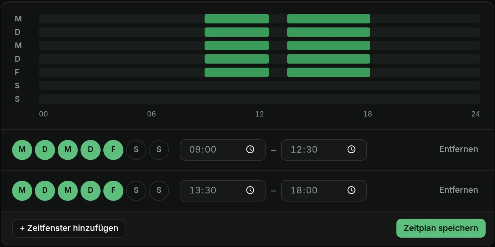
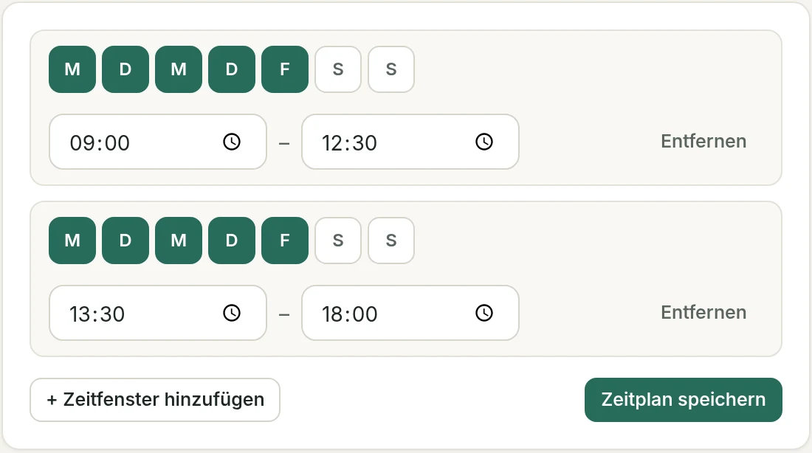
Sperren Sie die Websites, die Sie ganz automatisch öffnen, so viele Sie wollen, im kostenlosen Tarif. Mit Pro sperren Sie nur YouTube Shorts oder schalten den strikten Modus ein, wenn die Willenskraft nachlässt.
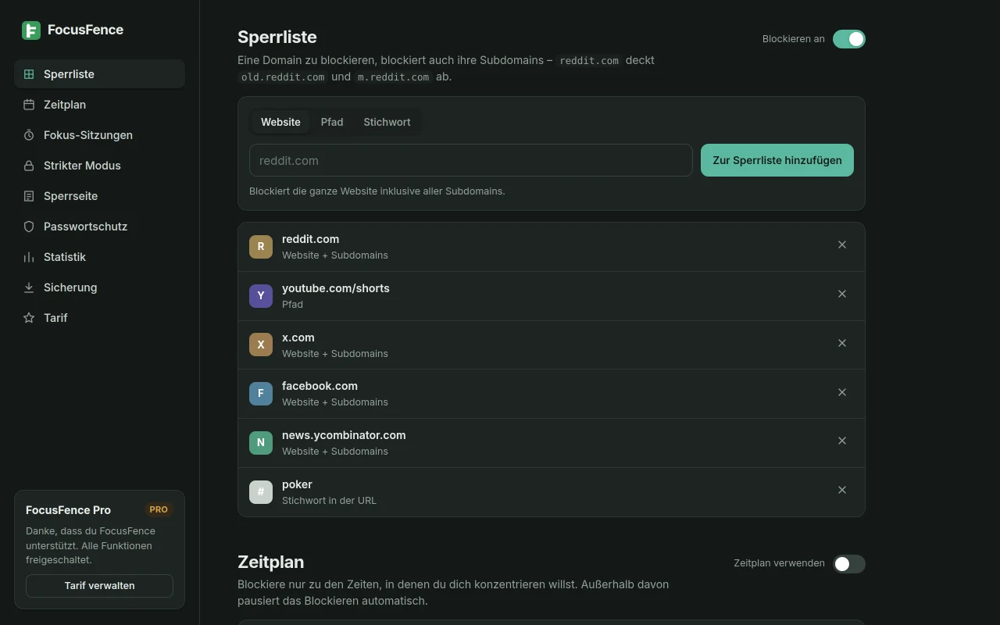
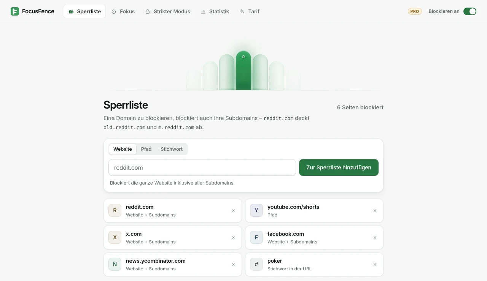
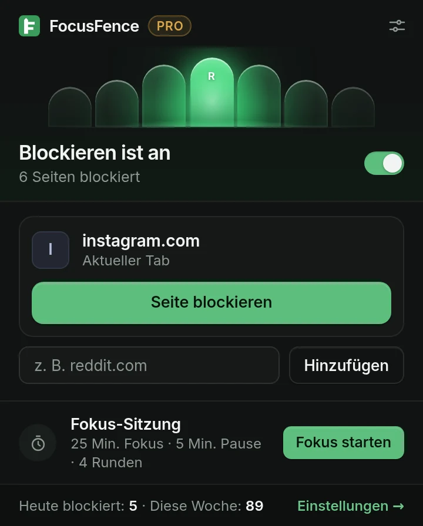
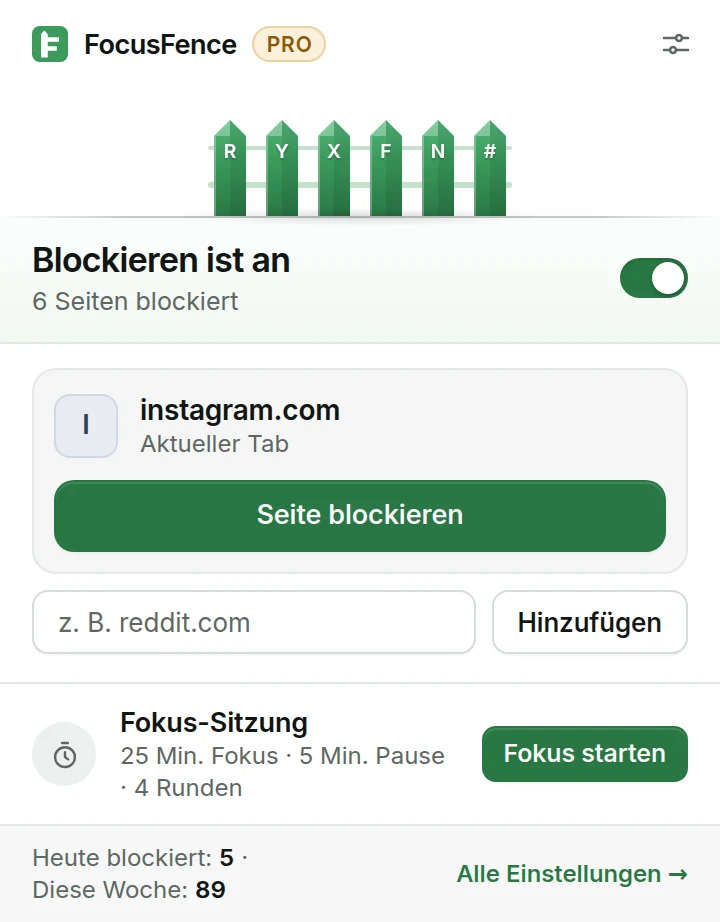
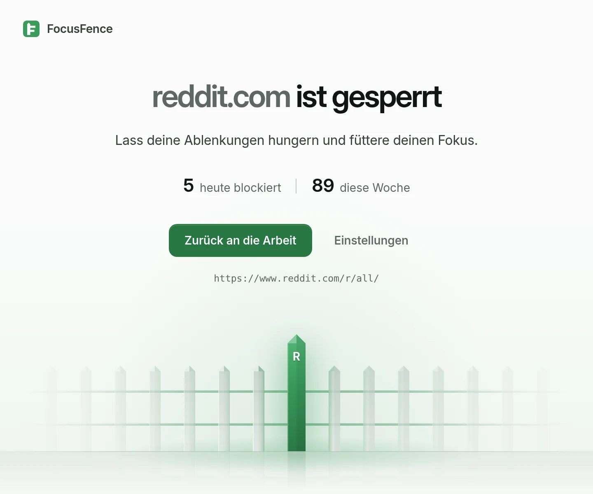
Bei der Installation fragt FocusFence nach den drei Websites, die Sie ohne nachzudenken öffnen. Drei reichen für den Anfang. Später können Sie im kostenlosen Tarif beliebig viele hinzufügen; Pfade und Stichwörter brauchen Pro.
Chrome fragt nach Zugriff auf die Websites, die Sie sperren, damit FocusFence seine ruhige Sperrseite zeigen kann. Lehnen Sie ab, bleiben sie trotzdem gesperrt.
Wenn Sie das nächste Mal zu einem Feed greifen, landen Sie auf einer ruhigen Seite, die Ihre heutigen Versuche zählt. Jede weitere Website sperren Sie mit einem Klick im Fenster.
Sperren
Sperren Sie im Fenster direkt auf der Website, oder stellen Sie Ihre Liste in den Einstellungen zusammen: ganze Websites, einzelne Pfade und Stichwörter.
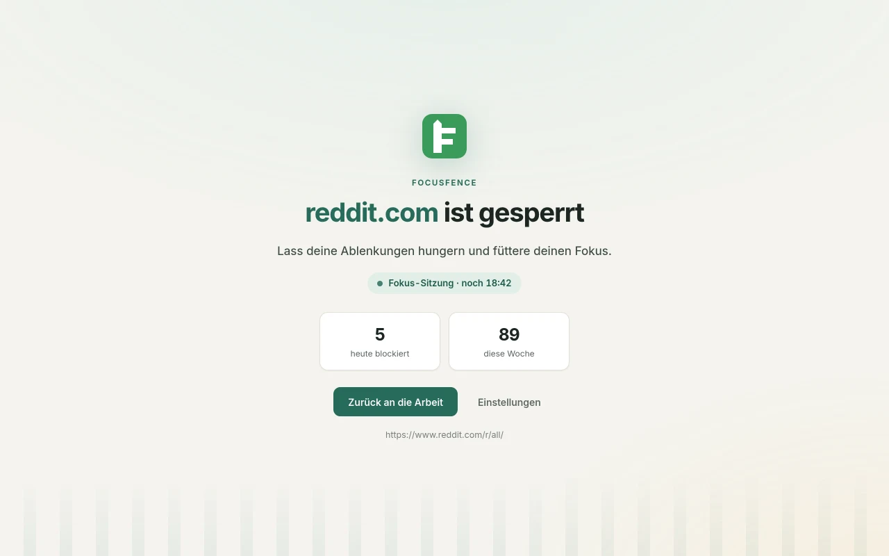
Öffnen Sie das Fenster auf der Website und klicken Sie auf Seite blockieren. Wer reddit.com sperrt, sperrt auch old.reddit.com, m.reddit.com und alle anderen Subdomains.
Sperren Sie youtube.com/shorts und behalten Sie den Rest von YouTube für Tutorials und Vorträge. Auch Shorts, die Sie innerhalb von YouTube anklicken, werden gesperrt. Stichwort-Regeln sperren jede Adresse, die ein von Ihnen gewähltes Wort enthält.
FokusPRO
Pro bringt die Zeit ins Spiel: nur zu den Stunden Ihrer Wahl sperren, in Pomodoro-Runden arbeiten und vor einer Deadline den strikten Modus einschalten.
Nur während der Arbeitszeit sperren, an den Tagen Ihrer Wahl. Auch Zeiträume über Mitternacht funktionieren, z. B. 22:00–06:00 für besseren Schlaf.


Standardmäßig 25 Minuten Fokus, dann 5 Minuten Pause, vier Runden lang, und alles lässt sich ändern. Während Sie sich konzentrieren, bleibt Ihre ganze Liste gesperrt, und der Countdown erscheint auf dem Symbol in der Symbolleiste.
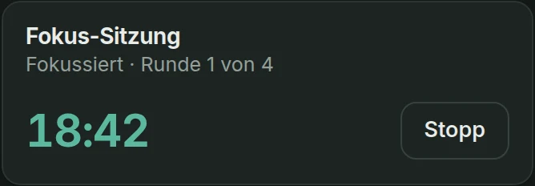
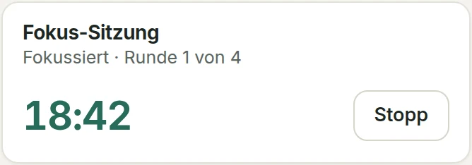
Solange der strikte Modus läuft, lässt sich die Sperre nicht abschalten und keine Website entfernen. Wer früher aufhören will, wartet 10 Minuten und tippt dann acht zufällige Wörter ab.
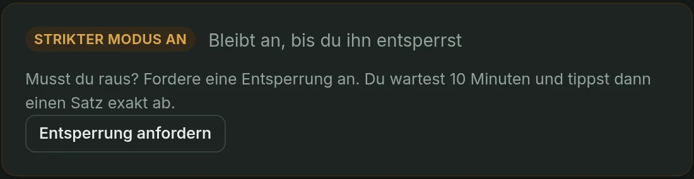
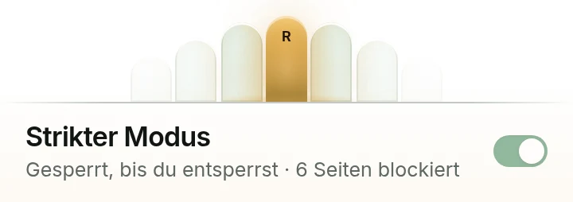
StatistikPRO
Gesperrte Aufrufe pro Tag und pro Website, über die letzten sieben Tage. Die Zahlen bleiben in Chrome auf Ihrem Computer und werden nirgendwohin gesendet.
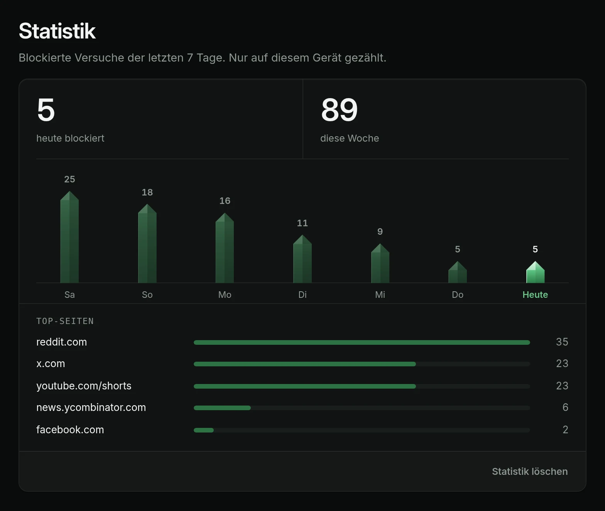
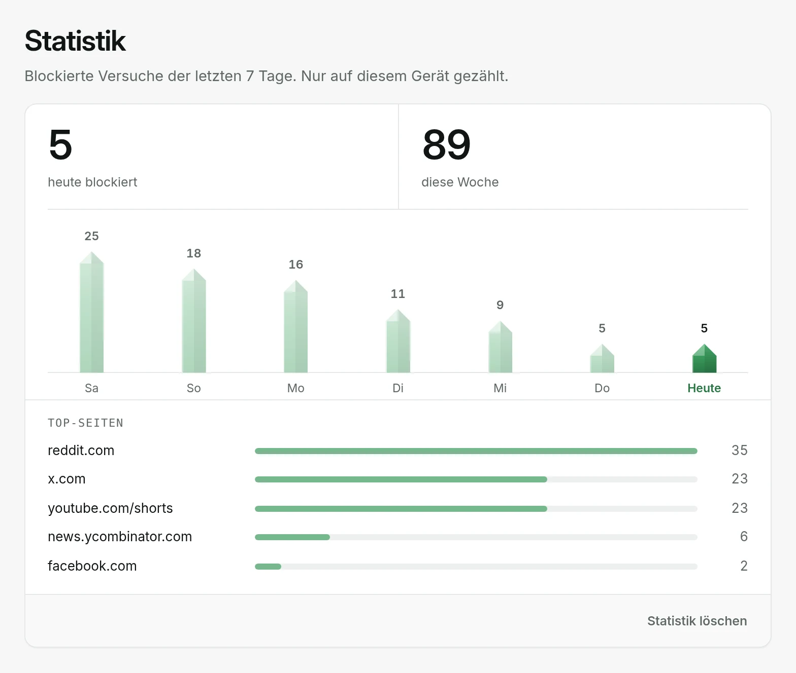
Verlangen Sie ein Passwort, um die Sperre abzuschalten, Websites zu entfernen oder Einstellungen zu ändern. Ideal, wenn jemand anderes den Schlüssel hat.
Schreiben Sie Ihrem zukünftigen Ich eine Notiz. Sie ersetzt die wechselnden Zitate auf der Sperrseite.
Sichern Sie Sperrliste, Zeitplan und Einstellungen als JSON-Datei und laden Sie sie auf einem anderen Computer.
Jeder Bildschirm von FocusFence folgt dem Design Ihres Systems.
FocusFence spricht die Sprache Ihres Chrome.
FocusFence sagt Ihnen, wenn private Fenster nicht abgedeckt sind, und wie Sie es dort zulassen.
Datenschutz
Installieren und loslegen. Sperrliste, Einstellungen und Statistik liegen im lokalen Speicher von Chrome, und FocusFence enthält weder Analyse- noch Werbecode.
Gesperrt wird über die in Chrome eingebaute Regel-Engine declarativeNetRequest, deshalb sieht FocusFence nie den Inhalt der Seiten, die Sie besuchen.
FocusFence fragt den Zugriff Website für Website an, nur für Websites, die Sie sperren. Lehnen Sie ab, bleibt die Website trotzdem gesperrt. Die Datenschutzerklärung erklärt jede Berechtigung.
storagedeclarativeNetRequestalarmsactiveTabscriptingNetzwerk: nichts, bis Sie sich für Pro entscheiden. Dann prüft ExtensionPay Ihre Lizenz.
Pro bringt Pfade, Stichwörter, Zeitpläne, Fokus-Sitzungen und den strikten Modus.
0 €
Dauerhaft
2,99 €/Monat
Monatliche Abrechnung
19,99 €/Jahr
Jährliche Abrechnung
Ein Jahr Pro
Jederzeit in FocusFence upgraden, unter Einstellungen › Tarif.
Zahlungen werden von ExtensionPay (Stripe) abgewickelt. Preise in Euro im Euroraum; anderswo 2,99 $/Monat oder 19,99 $/Jahr.
Noch etwas auf dem Herzen? Schreiben Sie an contact@focusfence.dev.
Fügen Sie FocusFence zu Chrome hinzu, öffnen Sie die Website, klicken Sie in der Symbolleiste auf das FocusFence-Symbol und dann auf Seite blockieren. Andere Websites tragen Sie im Fenster oder in den Einstellungen ein.
Ja. Der kostenlose Tarif sperrt beliebig viele Websites samt Subdomains, so lange Sie ihn nutzen, und ganz ohne Konto. Pro ist optional und bringt Pfade wie youtube.com/shorts, Stichwörter, Zeitpläne, Pomodoro-Sitzungen und den strikten Modus.
Ja, mit Pro. Fügen Sie youtube.com/shorts als Pfad-Regel hinzu. youtube.com, Videos und die Suche funktionieren weiter. Links zu Shorts und die Navigation zu Shorts innerhalb von YouTube werden gesperrt.
Ja. Eine Domain-Regel gilt für alle Subdomains, in Kostenlos und Pro.
Chrome erlaubt einer Erweiterung nur auf Websites, auf die sie Zugriff hat, ihre eigene Sperrseite anzuzeigen. FocusFence fragt nur nach dieser einen Website. Lehnen Sie ab, bleibt die Website gesperrt, Sie sehen dann aber die Fehlerseite von Chrome statt der Sperrseite von FocusFence.
Ja, wenn man es darauf anlegt. Chrome erlaubt immer, eine Erweiterung zu deaktivieren oder zu entfernen, und FocusFence kann die Erweiterungsseite nicht sperren. Eine zeitlich begrenzte strikte Sitzung wird pausiert, solange FocusFence aus ist, ihre Zeit läuft also nicht im Hintergrund ab. Inkognito-Fenster sind nur abgedeckt, wenn Sie FocusFence im Inkognito-Modus zulassen, und FocusFence warnt Sie, wenn das nicht der Fall ist. Andere Browser und Geräte sind nicht abgedeckt.
Keine. Siehe die Datenschutzerklärung. Der einzige Netzwerkverkehr ist die Lizenzprüfung durch ExtensionPay, und auch die erst, nachdem Sie sich für Pro entschieden haben.
Ja, unter der GNU AGPL v3. Zum Quellcode.